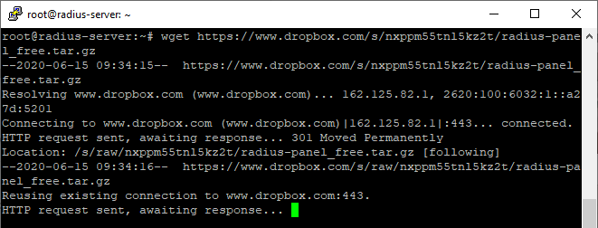
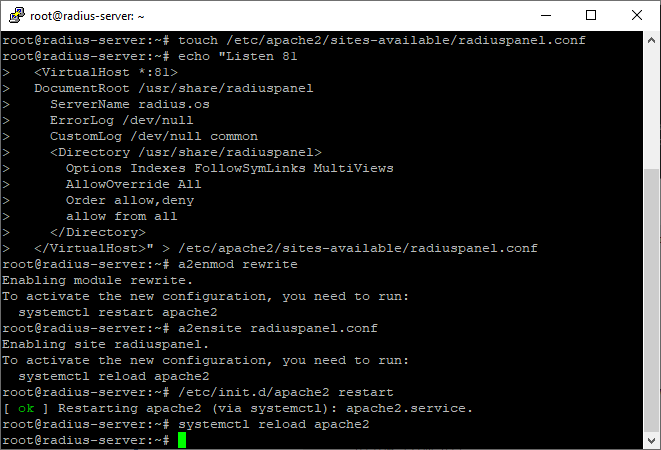

Tutorial Instalasi dan Konfiguasi RadiusPanel
Agar RadiusPanel berjalan dengan baik, silahkan ikuti langkah-langkah berikut:
Download RadiusPanel dan extract
# wget https://www.dropbox.com/s/nxppm55tnl5kz2t/radius-panel_free.tar.gz
# tar zxvf radius-panel_free.tar.gz -C /
# rm radius-panel_free.tar.gz
# chmod -R 777 /usr/share/radiuspanel/
# chown -R www-data.www-data /usr/share/radiuspanel

# tar zxvf radius-panel_free.tar.gz -C /
# rm radius-panel_free.tar.gz
# chmod -R 777 /usr/share/radiuspanel/
# chown -R www-data.www-data /usr/share/radiuspanel
Konfiguasi virtualhost
# touch /etc/apache2/sites-available/radiuspanel.conf
# echo "Listen 81
<VirtualHost *:81>
DocumentRoot /usr/share/radiuspanel
ServerName radius.os
ErrorLog /dev/null
CustomLog /dev/null common
<Directory /usr/share/radiuspanel>
Options Indexes FollowSymLinks MultiViews
AllowOverride All
Order allow,deny
allow from all
</Directory>
</VirtualHost>" > /etc/apache2/sites-available/radiuspanel.conf
# a2enmod rewrite
# a2ensite radiuspanel.conf
# /etc/init.d/apache2 restart
# systemctl reload apache2
# echo "Listen 81
<VirtualHost *:81>
DocumentRoot /usr/share/radiuspanel
ServerName radius.os
ErrorLog /dev/null
CustomLog /dev/null common
<Directory /usr/share/radiuspanel>
Options Indexes FollowSymLinks MultiViews
AllowOverride All
Order allow,deny
allow from all
</Directory>
</VirtualHost>" > /etc/apache2/sites-available/radiuspanel.conf
# a2enmod rewrite
# a2ensite radiuspanel.conf
# /etc/init.d/apache2 restart
# systemctl reload apache2
Selanjutnya cek instalasi RadiusPanel melalui web browser dengan membuka alamat server dengan port 81. Pada contoh dibawah ini menggunakan IP 192.168.5.2 port 81. Pastikan konfigurasi db_koneksi.php benar sesuai setingan masing-masing. Untuk kasus koneksi ke database gagal seperti contoh diatas, cara memperbaikinya:
# nano /usr/share/radiuspanel/db_koneksi.php
Pastikan semua variable sesuai dengan konfigurasi masing-masing. Kemudian simpan dan exit text editor.Kembali ke web browser, kemudian klik tombol kembali.
RadiusPanel Siap Digunakan